workingDir = "."
library(WGCNA)
#> Loading required package: dynamicTreeCut
#> Loading required package: fastcluster
#>
#> Attaching package: 'fastcluster'
#> The following object is masked from 'package:stats':
#>
#> hclust
#>
#>
#> Attaching package: 'WGCNA'
#> The following object is masked from 'package:stats':
#>
#> cor
library(cluster)
library(data.table)
library(Matrix)
library(Seurat)
#> Attaching SeuratObject
library(utils)
library(dplyr)
#>
#> Attaching package: 'dplyr'
#> The following objects are masked from 'package:data.table':
#>
#> between, first, last
#> The following objects are masked from 'package:stats':
#>
#> filter, lag
#> The following objects are masked from 'package:base':
#>
#> intersect, setdiff, setequal, union
library(patchwork)
library(graphics)
options(stringsAsFactors = FALSE)
data_dir = "Data/"
library(gplots)
#>
#> Attaching package: 'gplots'
#> The following object is masked from 'package:stats':
#>
#> lowess
myheatcol = colorpanel(250,'red',"orange",'lemonchiffon')data = as.data.frame(fread(paste(data_dir,"E175_only_cortical_cells.txt.gz", sep = "/"),sep = "\t"))
data = as.data.frame(data)
rownames(data) = data$V1
data = data[,2:ncol(data)]
data[1:10,1:10]
#> CGTTTAGTTTAC TCTAGAACAACG ACCTTTGTTCGT TTGTCTTCTTCG TAAAATATCGCC
#> 0610005C13Rik 0 0 0 0 0
#> 0610007N19Rik 0 0 0 0 0
#> 0610007P14Rik 2 1 1 1 0
#> 0610009B22Rik 1 1 0 0 0
#> 0610009D07Rik 2 3 0 3 0
#> 0610009E02Rik 0 0 0 0 0
#> 0610009L18Rik 0 0 0 2 0
#> 0610009O20Rik 0 0 0 0 0
#> 0610010F05Rik 1 2 2 0 1
#> 0610010K14Rik 0 0 0 0 0
#> GTACCCTATTTC GCACATTACCCA CCTCGCGCGGCT TTAATTTTGCCT GTCTTGCGTTTT
#> 0610005C13Rik 0 0 0 0 0
#> 0610007N19Rik 0 0 2 0 0
#> 0610007P14Rik 1 0 0 0 0
#> 0610009B22Rik 0 0 1 1 0
#> 0610009D07Rik 2 1 2 1 5
#> 0610009E02Rik 0 0 0 0 0
#> 0610009L18Rik 0 1 1 2 0
#> 0610009O20Rik 0 0 0 1 0
#> 0610010F05Rik 4 0 1 0 2
#> 0610010K14Rik 0 0 0 0 0E17 <- CreateSeuratObject(counts = data, project = "Cortex E17.5", min.cells = 3, min.features = 200)
#> Warning: Feature names cannot have underscores ('_'), replacing with dashes
#> ('-')
E17[["percent.mt"]] <- PercentageFeatureSet(E17, pattern = "^mt-")
VlnPlot(E17, features = c("nFeature_RNA", "nCount_RNA", "percent.mt"), ncol = 3)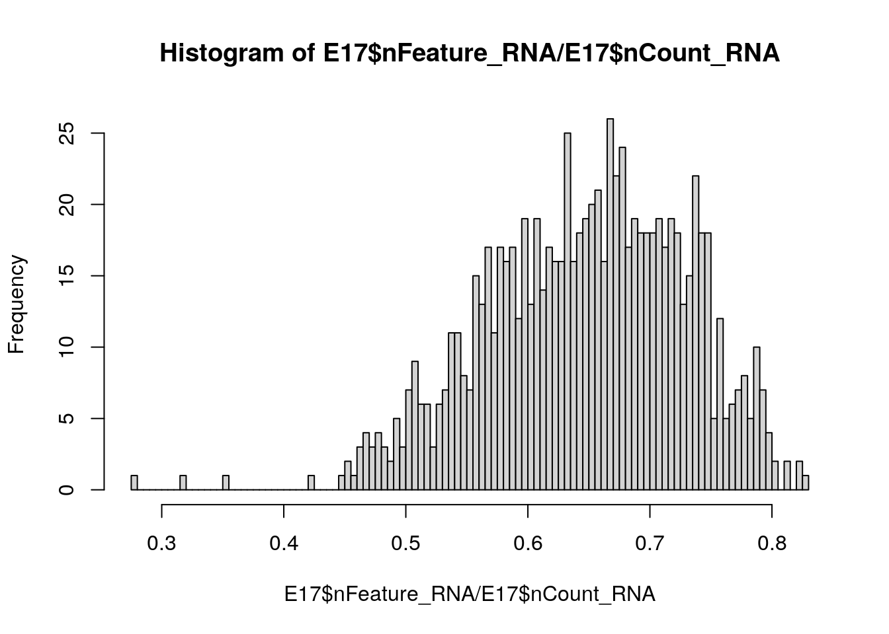
plot1 <- FeatureScatter(E17, feature1 = "nCount_RNA", feature2 = "percent.mt")
plot2 <- FeatureScatter(E17, feature1 = "nCount_RNA", feature2 = "nFeature_RNA")
plot1 + plot2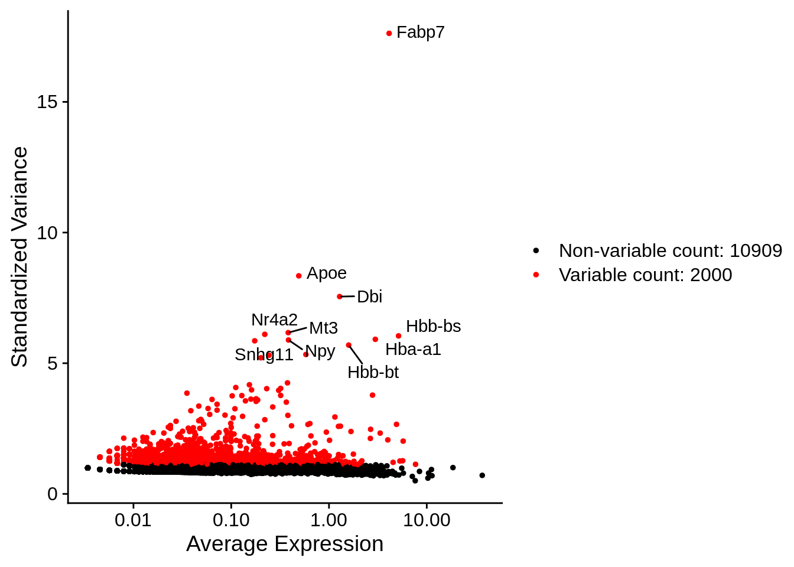
E17 <- NormalizeData(E17, normalization.method = "LogNormalize", scale.factor = 10000)
E17 <- FindVariableFeatures(E17, selection.method = "vst", nfeatures = 2000)
# Identify the 10 most highly variable genes
top10 <- head(VariableFeatures(E17), 10)
# plot variable features with and without labels
plot1 <- VariableFeaturePlot(E17)
plot2 <- LabelPoints(plot = plot1, points = top10, repel = TRUE)
#> When using repel, set xnudge and ynudge to 0 for optimal results
plot2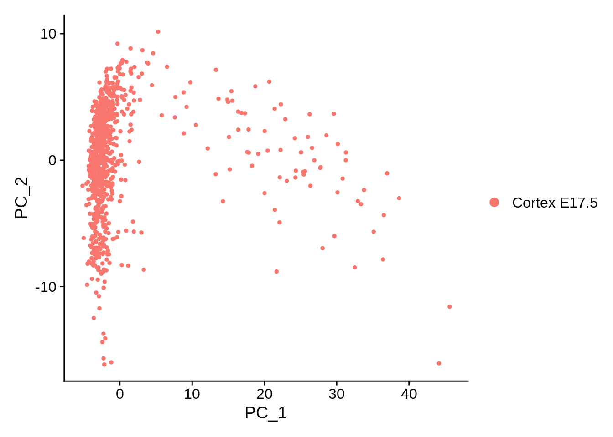
all.genes <- rownames(E17)
E17 <- ScaleData(E17, features = all.genes)
#> Centering and scaling data matrix
E17 <- RunPCA(E17, features = VariableFeatures(object = E17))
#> PC_ 1
#> Positive: Fabp7, Aldoc, Mfge8, Dbi, Ednrb, Vim, Slc1a3, Mt3, Apoe, Ttyh1
#> Tnc, Sox2, Atp1a2, Ddah1, Hes5, Sparc, Mlc1, Ppap2b, Rgcc, Bcan
#> Ndrg2, Qk, Lxn, Id3, Phgdh, Slc9a3r1, Nr2e1, Aldh1l1, Gpx8, Mt1
#> Negative: Tubb3, Stmn2, Neurod6, Stmn4, Map1b, Stmn1, Myt1l, Mef2c, Thra, 4930506M07Rik
#> Bcl11a, Gap43, Bhlhe22, Syt4, Cntn2, Nell2, Hs6st2, 9130024F11Rik, Olfm1, Satb2
#> Akap9, Ptprd, Rbfox1, Clmp, Ina, Enc1, Camk2b, Dync1i1, Dab1, Atp2b1
#> PC_ 2
#> Positive: Sstr2, Mdk, Meis2, Pou3f2, Eomes, Zbtb20, Unc5d, Sema3c, Fos, Tead2
#> Palmd, Mfap4, Nhlh1, Ulk4, H1f0, Uaca, Neurog2, Neurod1, Ezr, Ier2
#> Nrn1, Baz2b, Pdzrn3, Btg2, Egr1, Mfap2, Loxl1, H2afv, Hbp1, Nnat
#> Negative: Gap43, Sybu, Dync1i1, Meg3, Mef2c, Map1b, Fezf2, Camk2b, Ina, Stmn2
#> Cdh13, Thra, Nin, Rac3, Igfbp3, Ssbp2, Neto2, Cd200, Hmgcs1, Tuba1b
#> Syt1, Slc6a15, Mapre2, Plk2, Rprm, Atp1b1, Cadm2, Arpp21, Kitl, Ntrk2
#> PC_ 3
#> Positive: Meg3, Smpdl3a, Slc9a3r1, Slc15a2, Timp3, Tmem47, Ndrg2, Apoe, Ttyh1, Fmo1
#> Mlc1, Scrg1, Islr2, Malat1, Gstm1, Gja1, Ndnf, Aldh1l1, Mt3, Sparc
#> Serpinh1, Paqr7, Asrgl1, Sepp1, S100a1, Atp1b1, Ctsl, Cpe, S100a16, Lhx5
#> Negative: Birc5, Top2a, Cenpm, Pbk, Tpx2, Cenpe, Mki67, Cdca8, Gmnn, Cks2
#> Ccnb1, Ccnb2, Spc24, Hmgb2, Cenpf, Tk1, Hmmr, Prc1, Kif11, Ccna2
#> 2810417H13Rik, C330027C09Rik, Cdca2, Ect2, Nusap1, Cenpa, Uhrf1, Plk1, Spc25, Knstrn
#> PC_ 4
#> Positive: Lhx5, Nhlh2, Snhg11, Reln, 1500016L03Rik, Trp73, Cacna2d2, Ndnf, Car10, Lhx1
#> Islr2, Pcp4, Meg3, RP24-351J24.2, Rcan2, Pnoc, Mab21l1, Zic1, E330013P04Rik, Emx2
#> Malat1, Ebf3, Nr2f2, Zcchc12, Zbtb20, Celf4, Tmem163, Ache, Calb2, Unc5b
#> Negative: Ptn, Satb2, 9130024F11Rik, Neurod6, Mef2c, Dab1, Limch1, Hs6st2, Abracl, Dok5
#> Gucy1a3, Nell2, Ptprz1, Syt4, Ttc28, Clmp, Macrod2, Fam19a2, Smpdl3a, Ndrg1
#> Gstm1, 4930506M07Rik, Paqr7, Aldh1l1, Myt1l, Hmgcs1, Slc15a2, Pdzrn4, Slc9a3r1, Aldoc
#> PC_ 5
#> Positive: Fam210b, Sfrp1, Pax6, Enkur, Tubb3, Tuba1b, Mcm3, Veph1, Stmn1, Eif1b
#> Map1b, Hopx, Abracl, Cdk2ap2, Tfap2c, Rps27l, 2810025M15Rik, Slc14a2, Prdx1, Hells
#> Gap43, Sept11, Egln3, Gm1840, Ezr, Cpne2, 9130024F11Rik, Nes, Efnb2, Cux1
#> Negative: Serpine2, Id1, Olig1, Sparcl1, Igfbp3, Fam212b, Ccnb2, Ppic, Gng12, Ccnb1
#> Bcan, Cenpe, Pbk, Id3, Rasl11a, Plk1, Aqp4, Aspm, Hmmr, Slc6a1
#> Slc4a4, Malat1, Myo6, Timp3, Meg3, Cdk1, Prrx1, Npy, B2m, Cspg4
DimPlot(E17, reduction = "pca")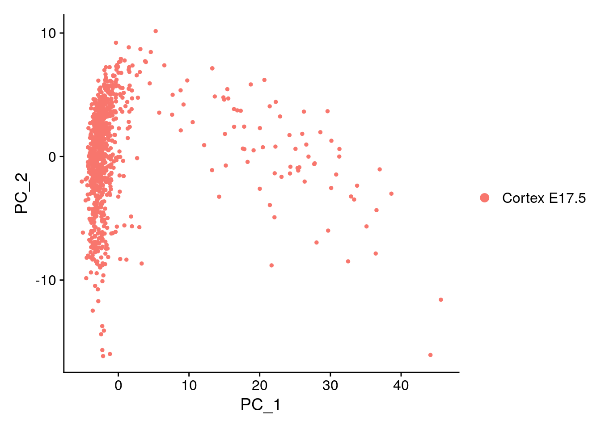
all.genes <- rownames(E17)
E17 <- ScaleData(E17, features = all.genes)
#> Centering and scaling data matrix
seurat.data = as.matrix(E17[["RNA"]]@data)
datExpr0 = t(seurat.data)
gsg = goodSamplesGenes(datExpr0, verbose = 3)
#> Flagging genes and samples with too many missing values...
#> ..step 1
gsg$allOK
#> [1] TRUE
if (!gsg$allOK){
# Optionally, print the gene and sample names that were removed:
if (sum(!gsg$goodGenes)>0)
printFlush(paste("Removing genes:", paste(names(datExpr0)[!gsg$goodGenes], collapse = ", ")));
if (sum(!gsg$goodSamples)>0)
printFlush(paste("Removing samples:", paste(rownames(datExpr0)[!gsg$goodSamples], collapse = ", ")));
# Remove the offending genes and samples from the data:
datExpr0 = datExpr0[gsg$goodSamples, gsg$goodGenes]
}
sampleTree = hclust(dist(datExpr0), method = "average")
# Plot the sample tree: Open a graphic output window of size 12 by 9 inches
# The user should change the dimensions if the window is too large or too small.
sizeGrWindow(12,9)
#pdf(file = "Plots/sampleClustering.pdf", width = 12, height = 9);
par(cex = 0.6);
par(mar = c(0,4,2,0))
plot(sampleTree, main = "Sample clustering to detect outliers", sub="", xlab="", cex.lab = 1.5,
cex.axis = 1.5, cex.main = 2)No outlier detected.
Automatic network construction and module detection Choose a set of soft-thresholding powers
powers = c(c(1:10), seq(from = 10, to=20, by=2))
# Call the network topology analysis function
sft = pickSoftThreshold(datExpr0, powerVector = powers, verbose = 5)
#> pickSoftThreshold: will use block size 3465.
#> pickSoftThreshold: calculating connectivity for given powers...
#> ..working on genes 1 through 3465 of 12909
#> Warning: executing %dopar% sequentially: no parallel backend registered
#> ..working on genes 3466 through 6930 of 12909
#> ..working on genes 6931 through 10395 of 12909
#> ..working on genes 10396 through 12909 of 12909
#> Power SFT.R.sq slope truncated.R.sq mean.k. median.k. max.k.
#> 1 1 0.688 -6.11 0.821 3.47e+02 3.48e+02 688.0000
#> 2 2 0.989 -4.74 0.993 1.72e+01 1.58e+01 88.6000
#> 3 3 0.993 -3.10 0.991 1.45e+00 1.09e+00 21.7000
#> 4 4 0.967 -2.36 0.963 2.10e-01 1.00e-01 7.9000
#> 5 5 0.473 -2.60 0.412 4.94e-02 1.16e-02 3.6000
#> 6 6 0.943 -1.78 0.934 1.65e-02 1.60e-03 1.8600
#> 7 7 0.467 -2.14 0.419 6.91e-03 2.55e-04 1.1200
#> 8 8 0.424 -2.36 0.346 3.34e-03 4.48e-05 0.8220
#> 9 9 0.434 -2.22 0.352 1.79e-03 8.48e-06 0.6260
#> 10 10 0.420 -2.34 0.297 1.04e-03 1.69e-06 0.4900
#> 11 10 0.420 -2.34 0.297 1.04e-03 1.69e-06 0.4900
#> 12 12 0.379 -2.01 0.210 4.13e-04 7.38e-08 0.3140
#> 13 14 0.359 -1.97 0.245 1.92e-04 3.47e-09 0.2090
#> 14 16 0.442 -2.15 0.285 9.92e-05 1.75e-10 0.1410
#> 15 18 0.454 -2.08 0.298 5.53e-05 9.02e-12 0.0968
#> 16 20 0.456 -2.03 0.301 3.26e-05 4.76e-13 0.0669
# Plot the results:
sizeGrWindow(9, 5)
par(mfrow = c(1,2));
cex1 = 0.9;
# Scale-free topology fit index as a function of the soft-thresholding power
plot(sft$fitIndices[,1], -sign(sft$fitIndices[,3])*sft$fitIndices[,2],
xlab="Soft Threshold (power)",ylab="Scale Free Topology Model Fit,signed R^2",type="n",
main = paste("Scale independence"));
text(sft$fitIndices[,1], -sign(sft$fitIndices[,3])*sft$fitIndices[,2],
labels=powers,cex=cex1,col="red");
# this line corresponds to using an R^2 cut-off of h
abline(h=0.90,col="red")
# Mean connectivity as a function of the soft-thresholding power
plot(sft$fitIndices[,1], sft$fitIndices[,5],
xlab="Soft Threshold (power)",ylab="Mean Connectivity", type="n",
main = paste("Mean connectivity"))
text(sft$fitIndices[,1], sft$fitIndices[,5], labels=powers, cex=cex1,col="red")Thresholds tested: 2, 3, 6 The best is 2.
net = blockwiseModules(datExpr0, power = 2, maxBlockSize = 20000,
TOMType = "signed", minModuleSize = 30,
reassignThreshold = 0, mergeCutHeight = 0.25,
numericLabels = TRUE, pamRespectsDendro = FALSE,
saveTOMs = TRUE,
saveTOMFileBase = "E17.5",
verbose = 3)
#> Calculating module eigengenes block-wise from all genes
#> Flagging genes and samples with too many missing values...
#> ..step 1
#> ..Working on block 1 .
#> TOM calculation: adjacency..
#> ..will not use multithreading.
#> Fraction of slow calculations: 0.000000
#> ..connectivity..
#> ..matrix multiplication (system BLAS)..
#> ..normalization..
#> ..done.
#> ..saving TOM for block 1 into file E17.5-block.1.RData
#> ....clustering..
#> ....detecting modules..
#> ....calculating module eigengenes..
#> ....checking kME in modules..
#> ..removing 762 genes from module 1 because their KME is too low.
#> ..removing 308 genes from module 2 because their KME is too low.
#> ..removing 115 genes from module 3 because their KME is too low.
#> ..removing 61 genes from module 4 because their KME is too low.
#> ..removing 86 genes from module 5 because their KME is too low.
#> ..removing 63 genes from module 6 because their KME is too low.
#> ..removing 22 genes from module 7 because their KME is too low.
#> ..removing 28 genes from module 8 because their KME is too low.
#> ..removing 12 genes from module 9 because their KME is too low.
#> ..removing 15 genes from module 10 because their KME is too low.
#> ..removing 14 genes from module 11 because their KME is too low.
#> ..removing 1 genes from module 12 because their KME is too low.
#> ..removing 6 genes from module 14 because their KME is too low.
#> ..removing 5 genes from module 15 because their KME is too low.
#> ..removing 3 genes from module 16 because their KME is too low.
#> ..removing 3 genes from module 17 because their KME is too low.
#> ..removing 2 genes from module 19 because their KME is too low.
#> ..removing 3 genes from module 20 because their KME is too low.
#> ..removing 5 genes from module 22 because their KME is too low.
#> ..removing 1 genes from module 23 because their KME is too low.
#> ..removing 4 genes from module 26 because their KME is too low.
#> ..removing 4 genes from module 27 because their KME is too low.
#> ..removing 1 genes from module 30 because their KME is too low.
#> ..merging modules that are too close..
#> mergeCloseModules: Merging modules whose distance is less than 0.25
#> Calculating new MEs...
# open a graphics window
sizeGrWindow(12, 9)
# Convert labels to colors for plotting
mergedColors = labels2colors(net$colors)primary.markers = c("Reln","Lhx5","Cux1","Satb2","Rorb","Sox5","Fezf2","Bcl11b","Vim","Hes1")
net$colors[primary.markers]
#> Reln Lhx5 Cux1 Satb2 Rorb Sox5 Fezf2 Bcl11b Vim Hes1
#> 20 20 0 0 0 0 0 0 1 1As we can see the primary markers are not well distributed: it detect layer I and progenitors but all other genes are in the same cluster (module).
Plot the dendrogram and the module colors underneath
plotDendroAndColors(net$dendrograms[[1]], mergedColors[net$blockGenes[[1]]],
"Module colors",
dendroLabels = FALSE, hang = 0.03,
addGuide = TRUE, guideHang = 0.05)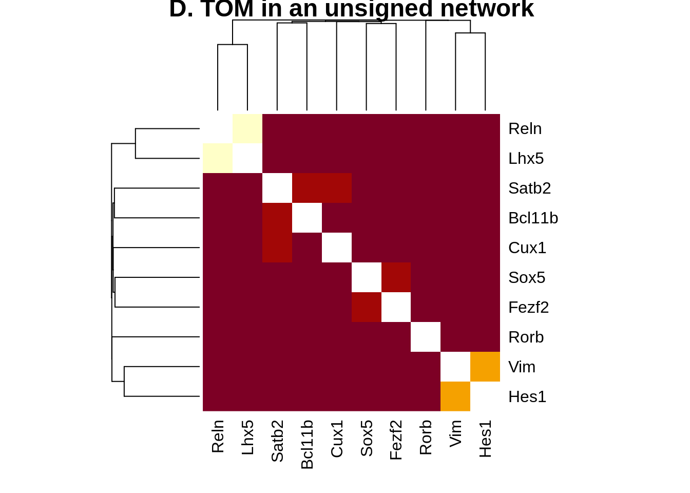
plotNetworkHeatmap(datExpr0, plotGenes = primary.markers,
networkType="unsigned", useTOM=TRUE,
power=2, main="D. TOM in an unsigned network")
#> ..connectivity..
#> ..matrix multiplication (system BLAS)..
#> ..normalization..
#> ..done.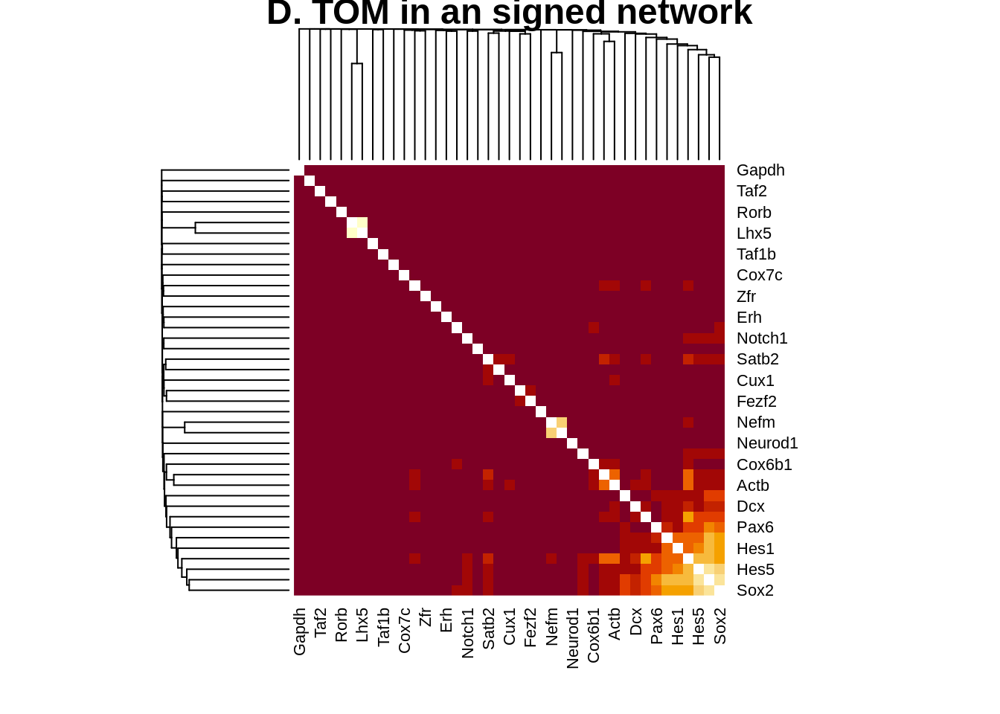
plotNetworkHeatmap(datExpr0, plotGenes = primary.markers,
networkType="signed", useTOM=TRUE,
power=2, main="D. TOM in an signed network")
#> ..connectivity..
#> ..matrix multiplication (system BLAS)..
#> ..normalization..
#> ..done.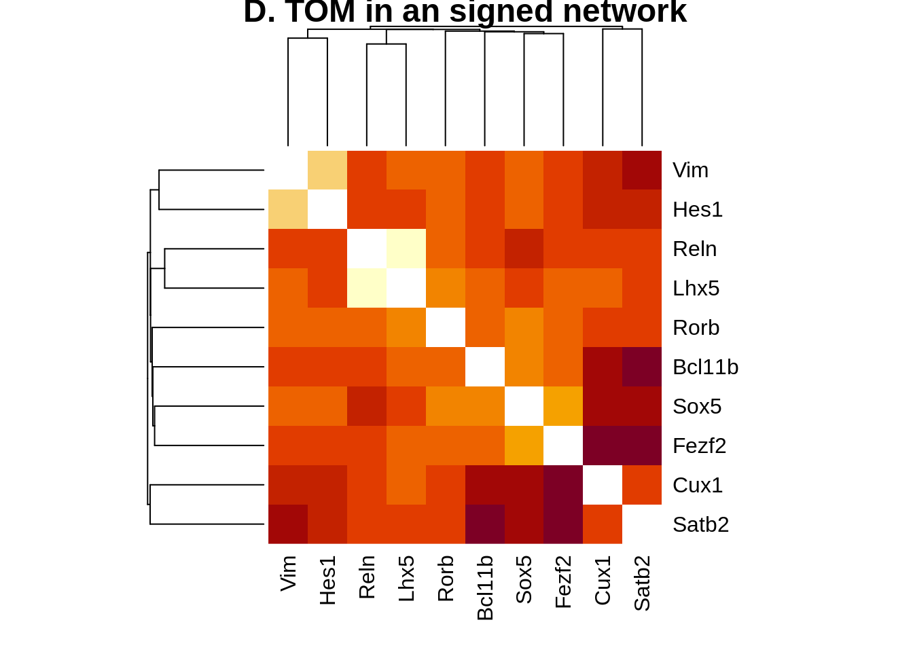
gene.sets.list = list("primary.markers"=primary.markers,
"NPGs"=c("Nes","Vim","Sox2","Sox1","Notch1", "Hes1","Hes5","Pax6"),
"RG" = c("Vim","Sox2","Pax6","Hes5","Hes1"),
"IN" = c("Tubb3","Tbr1","Stmn1","Neurod1","Dcx"),
"PNGs"=c("Map2","Tubb3","Neurod1","Nefm","Nefl","Dcx","Tbr1"))#,
#"constitutive" =c("Calm1","Cox6b1","Ppia","Rpl18","Cox7c", "Erh","H3f3a","Taf1b","Taf2","Gapdh","Actb", "Golph3", "Mtmr12", "Zfr", "Sub1", "Tars", "Amacr") )
genes = unique(unlist(gene.sets.list))
plotNetworkHeatmap(datExpr0, plotGenes = genes, networkType="signed", useTOM=TRUE,
power=2, main="D. TOM in an signed network")
#> ..connectivity..
#> ..matrix multiplication (system BLAS)..
#> ..normalization..
#> ..done.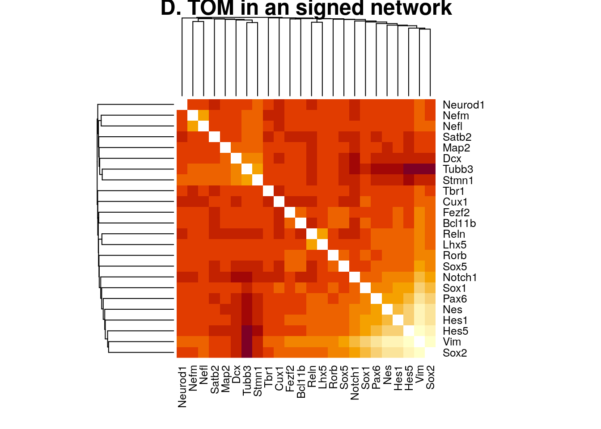
net$colors[primary.markers]
#> Reln Lhx5 Cux1 Satb2 Rorb Sox5 Fezf2 Bcl11b Vim Hes1
#> 20 20 0 0 0 0 0 0 1 1net$colors[unique(unlist(gene.sets.list))]
#> Reln Lhx5 Cux1 Satb2 Rorb Sox5 Fezf2 Bcl11b Vim Hes1
#> 20 20 0 0 0 0 0 0 1 1
#> Nes Sox2 Sox1 Notch1 Hes5 Pax6 Tubb3 Tbr1 Stmn1 Neurod1
#> 1 1 0 13 1 1 1 0 0 0
#> Dcx Map2 Nefm Nefl
#> 0 0 0 0# Calculate topological overlap anew: this could be done more efficiently by saving the TOM
# calculated during module detection, but let us do it again here.
dissTOM = 1-TOMsimilarityFromExpr(datExpr0, power = 2);
#> TOM calculation: adjacency..
#> ..will not use multithreading.
#> Fraction of slow calculations: 0.000000
#> ..connectivity..
#> ..matrix multiplication (system BLAS)..
#> ..normalization..
#> ..done.
# Transform dissTOM with a power to make moderately strong connections more visible in the heatmap
plotTOM = dissTOM^7;
# Set diagonal to NA for a nicer plot
diag(plotTOM) = NA;
rownames(dissTOM)=colnames(datExpr0)
colnames(dissTOM)=colnames(datExpr0)
selectTOM = dissTOM[primary.markers, primary.markers]
# There’s no simple way of restricting a clustering tree to a subset of genes, so we must re-cluster.
selectTree = hclust(as.dist(selectTOM), method = "average")
moduleColors = mergedColors
names(moduleColors) = rownames(dissTOM)
selectColors = moduleColors[primary.markers]
# Open a graphical window
sizeGrWindow(9,9)
# Taking the dissimilarity to a power, say 10, makes the plot more informative by effectively changing
# the color palette; setting the diagonal to NA also improves the clarity of the plot
plotDiss = selectTOM^7;
diag(plotDiss) = NA;
TOMplot(plotDiss, selectTree, selectColors, main = "Network heatmap plot, selected genes",col=myheatcol)plotDendroAndColors(selectTree,selectColors,
"Module colors",
dendroLabels = NULL, hang = 0.03,
addGuide = TRUE, guideHang = 0.05)
#> Warning in pmin(objHeights[dendro$order][floor(positions)],
#> objHeights[dendro$order][ceiling(positions)]): an argument will be fractionally
#> recycled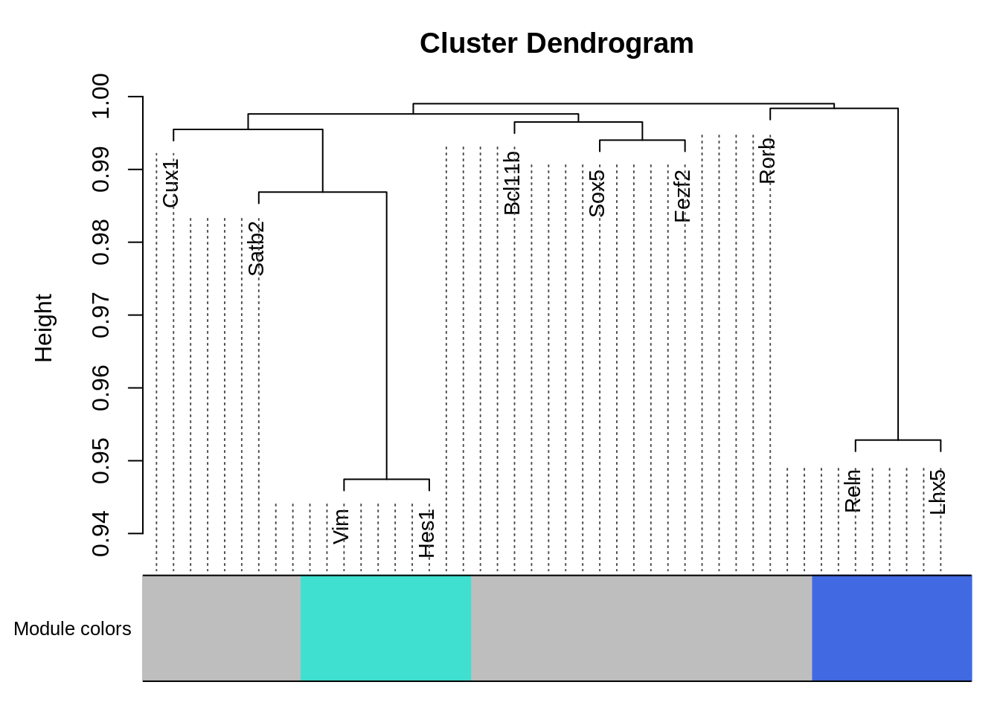
datExpr0 = t(seurat.data[rownames(seurat.data) %in% Var.genes,])
gsg = goodSamplesGenes(datExpr0, verbose = 3)
#> Flagging genes and samples with too many missing values...
#> ..step 1
gsg$allOK
#> [1] TRUE
if (!gsg$allOK){
# Optionally, print the gene and sample names that were removed:
if (sum(!gsg$goodGenes)>0)
printFlush(paste("Removing genes:", paste(names(datExpr0)[!gsg$goodGenes], collapse = ", ")));
if (sum(!gsg$goodSamples)>0)
printFlush(paste("Removing samples:", paste(rownames(datExpr0)[!gsg$goodSamples], collapse = ", ")));
# Remove the offending genes and samples from the data:
datExpr0 = datExpr0[gsg$goodSamples, gsg$goodGenes]
}
sampleTree = hclust(dist(datExpr0), method = "average");
# Plot the sample tree: Open a graphic output window of size 12 by 9 inches
# The user should change the dimensions if the window is too large or too small.
sizeGrWindow(12,9)
#pdf(file = "Plots/sampleClustering.pdf", width = 12, height = 9);
par(cex = 0.6);
par(mar = c(0,4,2,0))
plot(sampleTree, main = "Sample clustering to detect outliers", sub="", xlab="", cex.lab = 1.5,
cex.axis = 1.5, cex.main = 2)
# Plot a line to show the cut
#abline(h = 400, col = "red")No outliner detected
# Automatic network construction and module detection
# Choose a set of soft-thresholding powers
powers = c(c(1:10), seq(from = 10, to=25, by=2))
# Call the network topology analysis function
sft = pickSoftThreshold(datExpr0, powerVector = powers, verbose = 5)
#> pickSoftThreshold: will use block size 2000.
#> pickSoftThreshold: calculating connectivity for given powers...
#> ..working on genes 1 through 2000 of 2000
#> Power SFT.R.sq slope truncated.R.sq mean.k. median.k. max.k.
#> 1 1 0.882 -3.43 0.9270 6.29e+01 5.70e+01 188.0000
#> 2 2 0.961 -2.50 0.9600 4.90e+00 3.12e+00 41.8000
#> 3 3 0.961 -1.95 0.9610 7.87e-01 2.95e-01 14.4000
#> 4 4 0.927 -1.76 0.9140 2.04e-01 4.01e-02 6.2800
#> 5 5 0.361 -2.33 0.2680 7.08e-02 6.98e-03 3.1400
#> 6 6 0.368 -2.21 0.2850 2.95e-02 1.40e-03 1.7100
#> 7 7 0.345 -2.61 0.2930 1.39e-02 2.82e-04 0.9890
#> 8 8 0.342 -2.47 0.3070 7.12e-03 6.31e-05 0.5930
#> 9 9 0.366 -1.89 0.3020 3.91e-03 1.49e-05 0.3660
#> 10 10 0.311 -1.68 0.1190 2.27e-03 3.43e-06 0.2310
#> 11 10 0.311 -1.68 0.1190 2.27e-03 3.43e-06 0.2310
#> 12 12 0.280 -1.93 0.0743 8.63e-04 2.01e-07 0.1270
#> 13 14 0.379 -2.36 0.3690 3.74e-04 1.25e-08 0.0821
#> 14 16 0.436 -2.70 0.3160 1.79e-04 7.91e-10 0.0545
#> 15 18 0.433 -2.58 0.3590 9.31e-05 5.07e-11 0.0367
#> 16 20 0.468 -2.57 0.3160 5.17e-05 3.32e-12 0.0249
#> 17 22 0.490 -2.45 0.4020 3.02e-05 2.16e-13 0.0170
#> 18 24 0.498 -2.36 0.4110 1.84e-05 1.47e-14 0.0117Plot the results:
sizeGrWindow(9, 5)
par(mfrow = c(1,2));
cex1 = 0.9;
# Scale-free topology fit index as a function of the soft-thresholding power
plot(sft$fitIndices[,1], -sign(sft$fitIndices[,3])*sft$fitIndices[,2],
xlab="Soft Threshold (power)",ylab="Scale Free Topology Model Fit,signed R^2",type="n",
main = paste("Scale independence"));
text(sft$fitIndices[,1], -sign(sft$fitIndices[,3])*sft$fitIndices[,2],
labels=powers,cex=cex1,col="red");
# this line corresponds to using an R^2 cut-off of h
abline(h=0.90,col="red")
# Mean connectivity as a function of the soft-thresholding power
plot(sft$fitIndices[,1], sft$fitIndices[,5],
xlab="Soft Threshold (power)",ylab="Mean Connectivity", type="n",
main = paste("Mean connectivity"))
text(sft$fitIndices[,1], sft$fitIndices[,5], labels=powers, cex=cex1,col="red")Tested with 5, 3 and 2 and 4. The best seems 2
net = blockwiseModules(datExpr0, power = 2, maxBlockSize = 20000,
TOMType = "signed", minModuleSize = 30,
reassignThreshold = 0, mergeCutHeight = 0.25,
numericLabels = TRUE, pamRespectsDendro = FALSE,
saveTOMs = TRUE,
saveTOMFileBase = "E17.5",
verbose = 3)
#> Calculating module eigengenes block-wise from all genes
#> Flagging genes and samples with too many missing values...
#> ..step 1
#> ..Working on block 1 .
#> TOM calculation: adjacency..
#> ..will not use multithreading.
#> Fraction of slow calculations: 0.000000
#> ..connectivity..
#> ..matrix multiplication (system BLAS)..
#> ..normalization..
#> ..done.
#> ..saving TOM for block 1 into file E17.5-block.1.RData
#> ....clustering..
#> ....detecting modules..
#> ....calculating module eigengenes..
#> ....checking kME in modules..
#> ..removing 552 genes from module 1 because their KME is too low.
#> ..removing 154 genes from module 2 because their KME is too low.
#> ..removing 86 genes from module 3 because their KME is too low.
#> ..removing 42 genes from module 4 because their KME is too low.
#> ..removing 20 genes from module 5 because their KME is too low.
#> ..merging modules that are too close..
#> mergeCloseModules: Merging modules whose distance is less than 0.25
#> Calculating new MEs...# open a graphics window
sizeGrWindow(12, 9)
# Convert labels to colors for plotting
mergedColors = labels2colors(net$colors)
# Plot the dendrogram and the module colors underneath
plotDendroAndColors(net$dendrograms[[1]], mergedColors[net$blockGenes[[1]]],
"Module colors",
dendroLabels = FALSE, hang = 0.03,
addGuide = TRUE, guideHang = 0.05)plotNetworkHeatmap(datExpr0, plotGenes = unique(unlist(gene.sets.list)),
networkType="signed", useTOM=TRUE,
power=2, main="D. TOM in an signed network")
#> Warning: Not all gene names were recognized. Only the following genes were recognized.
#> Reln, Lhx5, Cux1, Satb2, Rorb, Sox5, Fezf2, Bcl11b, Vim, Hes1, Nes, Sox2, Sox1, Hes5, Pax6, Tubb3, Stmn1, Neurod1, Nefm, Nefl
#> ..connectivity..
#> ..matrix multiplication (system BLAS)..
#> ..normalization..
#> ..done.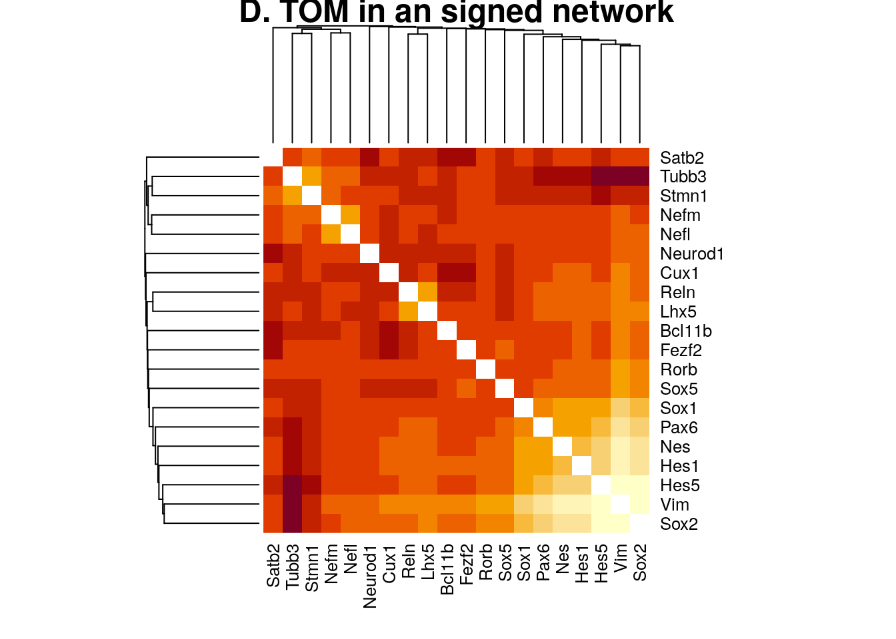
plotNetworkHeatmap(datExpr0, plotGenes = primary.markers,
networkType="signed", useTOM=TRUE,
power=2, main="D. TOM in an signed network")
#> ..connectivity..
#> ..matrix multiplication (system BLAS)..
#> ..normalization..
#> ..done.# Calculate topological overlap anew: this could be done more efficiently by saving the TOM
# calculated during module detection, but let us do it again here.
dissTOM = 1-TOMsimilarityFromExpr(datExpr0, power = 2);
#> TOM calculation: adjacency..
#> ..will not use multithreading.
#> Fraction of slow calculations: 0.000000
#> ..connectivity..
#> ..matrix multiplication (system BLAS)..
#> ..normalization..
#> ..done.
# Transform dissTOM with a power to make moderately strong connections more visible in the heatmap
plotTOM = dissTOM^7;
# Set diagonal to NA for a nicer plot
diag(plotTOM) = NA;
rownames(dissTOM)=colnames(datExpr0)
colnames(dissTOM)=colnames(datExpr0)
selectTOM = dissTOM[primary.markers, primary.markers];
# There’s no simple way of restricting a clustering tree to a subset of genes, so we must re-cluster.
selectTree = hclust(as.dist(selectTOM), method = "average")
moduleColors = mergedColors
names(moduleColors) = rownames(dissTOM)
selectColors = moduleColors[primary.markers]
# Open a graphical window
sizeGrWindow(9,9)
# Taking the dissimilarity to a power, say 10, makes the plot more informative by effectively changing
# the color palette; setting the diagonal to NA also improves the clarity of the plot
plotDiss = selectTOM^7;
diag(plotDiss) = NA;
TOMplot(plotDiss, selectTree, selectColors, main = "Network heatmap plot, selected genes",col=myheatcol)plotDendroAndColors(selectTree,selectColors,
"Module colors",
dendroLabels = NULL, hang = 0.03,
addGuide = TRUE, guideHang = 0.05)
#> Warning in pmin(objHeights[dendro$order][floor(positions)],
#> objHeights[dendro$order][ceiling(positions)]): an argument will be fractionally
#> recycled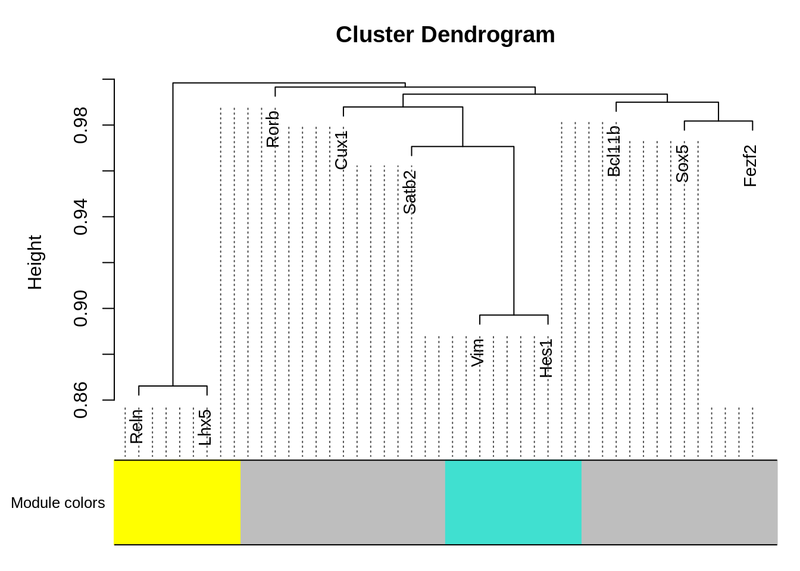
net$colors[primary.markers]
#> Reln Lhx5 Cux1 Satb2 Rorb Sox5 Fezf2 Bcl11b Vim Hes1
#> 4 4 0 0 0 0 0 0 1 1net$colors[genes]
#> Reln Lhx5 Cux1 Satb2 Rorb Sox5 Fezf2 Bcl11b Vim Hes1
#> 4 4 0 0 0 0 0 0 1 1
#> Nes Sox2 Sox1 <NA> Hes5 Pax6 Tubb3 <NA> Stmn1 Neurod1
#> 1 1 0 NA 1 1 1 NA 1 0
#> <NA> <NA> Nefm Nefl
#> NA NA 0 0Markers_Loo = read.csv("Data/Markers_Loo.csv")
Markers_Loo
#> L.I L.II.IV L.V.VI PROG
#> 1 Ebf3 Satb2 Bcl11b Aldoc
#> 2 Gdf5 3110047P20Rik Crym Arhgef39
#> 3 Lhx1 9130024F11Rik Fezf2 Aspm
#> 4 Lhx5 Dok5 Hs3st4 Cdc25c
#> 5 Ndnf Inhba Mc4r Cdkn3
#> 6 Reln Pou3f1 Nfe2l3 Cyr61
#> 7 Samd3 Nxph3 Dkk3
#> 8 Trp73 Plxna4 Ednrb
#> 9 Rwdd3 Gas1
#> 10 Sla Gas2l3
#> 11 Sybu Hes1
#> 12 Tbr1 Hes5
#> 13 Htra1
#> 14 Nde1
#> 15 Nek2
#> 16 Pax6
#> 17 Pkmyt1
#> 18 Plk1
#> 19 Rspo1
#> 20 Tcf19
#> 21 Tk1
#> 22 Wnt8btableMarkersWGCNA = as.data.frame(matrix(nrow = 4,ncol = 4))
colnames(tableMarkersWGCNA)=c("Loo.L.I","Loo.L.II.IV","Loo.L.V.VI","Loo.PROG")
rownames(tableMarkersWGCNA)=c("WGCNA.L.I","WGCNA.L.II.VI","WGCNA.PROG","WGCNA.Not Groupped")
net$colors[primary.markers]
#> Reln Lhx5 Cux1 Satb2 Rorb Sox5 Fezf2 Bcl11b Vim Hes1
#> 4 4 0 0 0 0 0 0 1 1groups = list("L.I"=4,"L.II.VI"=0,"PROG"=1)
for(layer1 in c("L.I","L.II.VI","PROG")){
for(layer2 in c("L.I","L.II.IV", "L.V.VI","PROG")){
tableMarkersWGCNA[paste0("WGCNA.",layer1),paste0("Loo.",layer2)] =
sum(names(net$colors[net$colors %in% groups[[layer1]]]) %in% Markers_Loo[[layer2]])
tableMarkersWGCNA[paste0("WGCNA.","Not Groupped"),paste0("Loo.",layer2)] =
sum(names(net$colors[!net$colors %in% unlist(groups)]) %in% Markers_Loo[[layer2]])
}
}
tableMarkersWGCNA
#> Loo.L.I Loo.L.II.IV Loo.L.V.VI Loo.PROG
#> WGCNA.L.I 6 0 0 0
#> WGCNA.L.II.VI 1 4 9 2
#> WGCNA.PROG 0 0 0 8
#> WGCNA.Not Groupped 0 0 0 5selectTOM = dissTOM[rownames(dissTOM) %in% unlist(Markers_Loo),colnames(dissTOM) %in% unlist(Markers_Loo)]
# There’s no simple way of restricting a clustering tree to a subset of genes, so we must re-cluster.
selectTree = hclust(as.dist(selectTOM), method = "average")
moduleColors = mergedColors
names(moduleColors) = rownames(dissTOM)
selectColors = moduleColors[names(moduleColors) %in% unlist(Markers_Loo)]
# Open a graphical window
sizeGrWindow(9,9)
# Taking the dissimilarity to a power, say 10, makes the plot more informative by effectively changing
# the color palette; setting the diagonal to NA also improves the clarity of the plot
plotDiss = selectTOM^7;
diag(plotDiss) = NA;
TOMplot(plotDiss, selectTree, selectColors, main = "Network heatmap plot, markers from Loo et al.",col=myheatcol)plotDendroAndColors(selectTree,selectColors,
"Module colors",
dendroLabels = NULL, hang = 0.03,
addGuide = TRUE, guideHang = 0.05)
#> Warning in pmin(objHeights[dendro$order][floor(positions)],
#> objHeights[dendro$order][ceiling(positions)]): an argument will be fractionally
#> recycled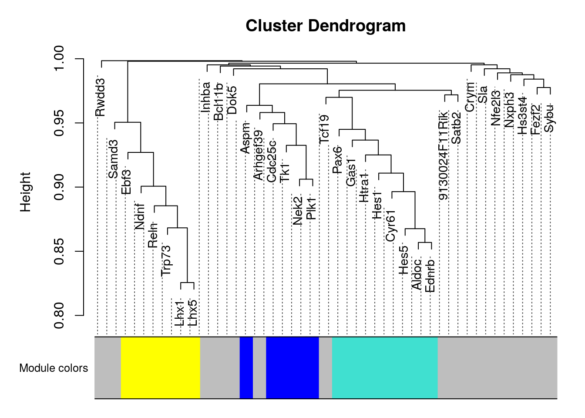
sessionInfo()
#> R version 4.0.4 (2021-02-15)
#> Platform: x86_64-pc-linux-gnu (64-bit)
#> Running under: Ubuntu 18.04.5 LTS
#>
#> Matrix products: default
#> BLAS: /usr/lib/x86_64-linux-gnu/openblas/libblas.so.3
#> LAPACK: /usr/lib/x86_64-linux-gnu/libopenblasp-r0.2.20.so
#>
#> locale:
#> [1] LC_CTYPE=en_US.UTF-8 LC_NUMERIC=C
#> [3] LC_TIME=en_US.UTF-8 LC_COLLATE=en_US.UTF-8
#> [5] LC_MONETARY=en_US.UTF-8 LC_MESSAGES=en_US.UTF-8
#> [7] LC_PAPER=en_US.UTF-8 LC_NAME=C
#> [9] LC_ADDRESS=C LC_TELEPHONE=C
#> [11] LC_MEASUREMENT=en_US.UTF-8 LC_IDENTIFICATION=C
#>
#> attached base packages:
#> [1] stats graphics grDevices utils datasets methods base
#>
#> other attached packages:
#> [1] gplots_3.1.1 patchwork_1.1.1 dplyr_1.0.4
#> [4] SeuratObject_4.0.0 Seurat_4.0.1 Matrix_1.3-2
#> [7] data.table_1.14.0 cluster_2.1.1 WGCNA_1.70-3
#> [10] fastcluster_1.1.25 dynamicTreeCut_1.63-1
#>
#> loaded via a namespace (and not attached):
#> [1] backports_1.2.1 Hmisc_4.5-0 plyr_1.8.6
#> [4] igraph_1.2.6 lazyeval_0.2.2 splines_4.0.4
#> [7] listenv_0.8.0 scattermore_0.7 ggplot2_3.3.3
#> [10] digest_0.6.27 foreach_1.5.1 htmltools_0.5.1.1
#> [13] GO.db_3.12.1 fansi_0.4.2 magrittr_2.0.1
#> [16] checkmate_2.0.0 memoise_2.0.0 tensor_1.5
#> [19] doParallel_1.0.16 ROCR_1.0-11 globals_0.14.0
#> [22] matrixStats_0.58.0 R.utils_2.10.1 spatstat.sparse_2.0-0
#> [25] jpeg_0.1-8.1 colorspace_2.0-0 blob_1.2.1
#> [28] ggrepel_0.9.1 xfun_0.22 crayon_1.4.0
#> [31] jsonlite_1.7.2 spatstat.data_2.1-0 impute_1.64.0
#> [34] survival_3.2-10 zoo_1.8-8 iterators_1.0.13
#> [37] glue_1.4.2 polyclip_1.10-0 gtable_0.3.0
#> [40] leiden_0.3.7 future.apply_1.7.0 BiocGenerics_0.36.0
#> [43] abind_1.4-5 scales_1.1.1 DBI_1.1.1
#> [46] miniUI_0.1.1.1 Rcpp_1.0.6 viridisLite_0.3.0
#> [49] xtable_1.8-4 htmlTable_2.1.0 reticulate_1.18
#> [52] spatstat.core_1.65-5 foreign_0.8-81 bit_4.0.4
#> [55] preprocessCore_1.52.1 Formula_1.2-4 stats4_4.0.4
#> [58] htmlwidgets_1.5.3 httr_1.4.2 RColorBrewer_1.1-2
#> [61] ellipsis_0.3.1 ica_1.0-2 farver_2.1.0
#> [64] R.methodsS3_1.8.1 pkgconfig_2.0.3 uwot_0.1.10
#> [67] nnet_7.3-15 sass_0.3.1 deldir_0.2-10
#> [70] utf8_1.2.1 labeling_0.4.2 tidyselect_1.1.0
#> [73] rlang_0.4.10 reshape2_1.4.4 later_1.1.0.1
#> [76] AnnotationDbi_1.52.0 munsell_0.5.0 tools_4.0.4
#> [79] cachem_1.0.3 generics_0.1.0 RSQLite_2.2.3
#> [82] ggridges_0.5.3 evaluate_0.14 stringr_1.4.0
#> [85] fastmap_1.1.0 goftest_1.2-2 yaml_2.2.1
#> [88] knitr_1.31 bit64_4.0.5 fitdistrplus_1.1-3
#> [91] caTools_1.18.1 purrr_0.3.4 RANN_2.6.1
#> [94] nlme_3.1-152 pbapply_1.4-3 future_1.21.0
#> [97] mime_0.10 R.oo_1.24.0 compiler_4.0.4
#> [100] rstudioapi_0.13 plotly_4.9.3 png_0.1-7
#> [103] spatstat.utils_2.1-0 tibble_3.1.0 bslib_0.2.4
#> [106] stringi_1.5.3 highr_0.8 lattice_0.20-41
#> [109] vctrs_0.3.6 pillar_1.5.1 lifecycle_1.0.0
#> [112] spatstat.geom_1.65-5 lmtest_0.9-38 jquerylib_0.1.3
#> [115] RcppAnnoy_0.0.18 bitops_1.0-6 cowplot_1.1.1
#> [118] irlba_2.3.3 httpuv_1.5.5 R6_2.5.0
#> [121] latticeExtra_0.6-29 promises_1.2.0.1 KernSmooth_2.23-18
#> [124] gridExtra_2.3 IRanges_2.24.1 parallelly_1.24.0
#> [127] codetools_0.2-18 gtools_3.8.2 MASS_7.3-53.1
#> [130] assertthat_0.2.1 withr_2.4.1 sctransform_0.3.2
#> [133] S4Vectors_0.28.1 mgcv_1.8-33 parallel_4.0.4
#> [136] grid_4.0.4 rpart_4.1-15 tidyr_1.1.2
#> [139] rmarkdown_2.7 Rtsne_0.15 Biobase_2.50.0
#> [142] shiny_1.6.0 base64enc_0.1-3